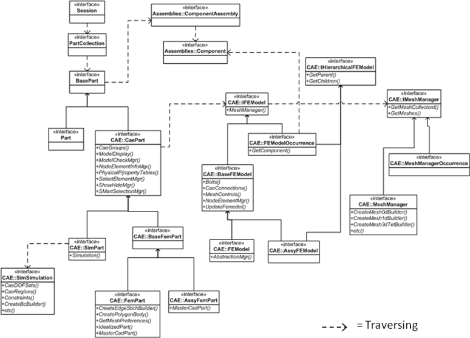

CAE 中的 NX Open 数据模型比在 NX CAD 应用模块中使用的数据模型更为深入，要写一个 CAE 中的 NX Open 应用程序，您必须理解数据模型中的 CAE 数据层级，以及不同层级的角色与功能。
NX CAD 主要在一个文件类型(*.prt)中储存与管理数据，NX CAE 则使用多种文件类型来储存与管理数据，比如*.fem、*.sim 以及*.asm。
CAE 模型中的数据关系比 CAD 模型中的数据关系层级更为深层，当您创建 CAE 应用程序时，您经常需要遍历数据模型来获取您所需的数据。
下图所示为 CAE 中的 NX Open 数据模型的一小部分。
